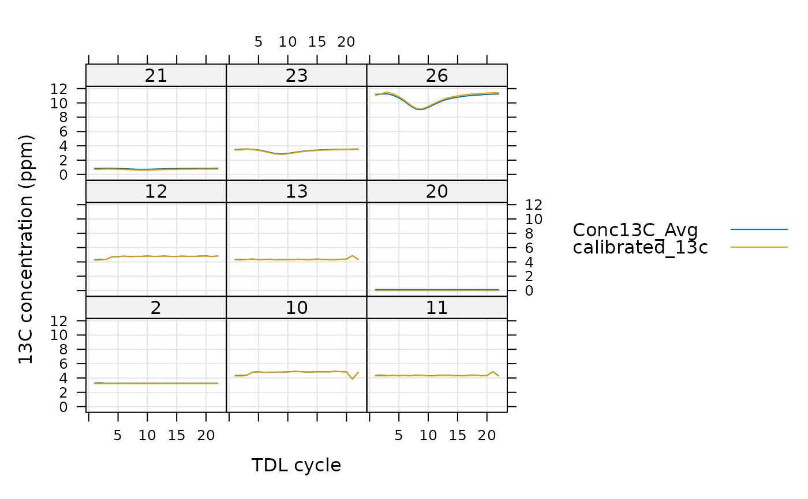
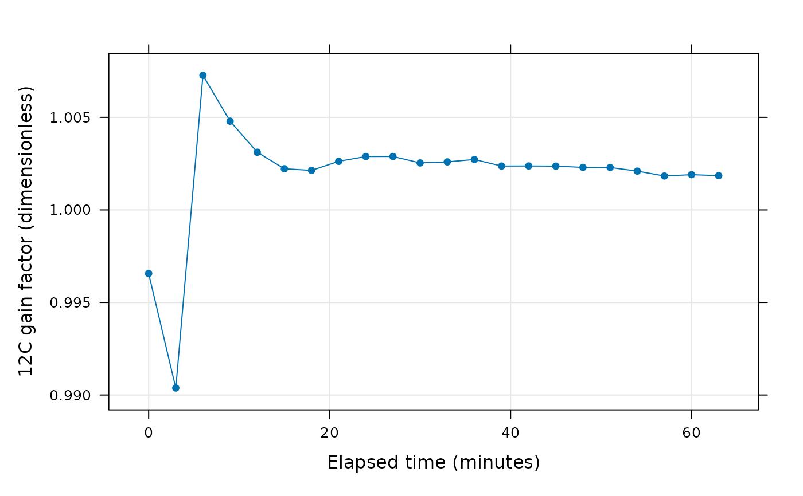

Process cycles from the ERML TDL
process_tdl_cycle_erml.RdUses the 12C and 13C signal from the calibration lines of a tunable diode laser (TDL) to determine correction factors and apply them to the sample lines. Applicable for a system with a NOAA calibration tank, a nitrogen tank, and three other lines mixing the nitrogen with a CO2 tank in different ratios. This function is designed specifically for the TDL operating in Carl Bernacchi's lab in the Edward R. Madigan Laboratory (ERML) at the University of Illinois, Urbana-Champaign.
Usage
process_tdl_cycle_erml(
tdl_cycle,
noaa_valve,
calibration_0_valve,
calibration_1_valve,
calibration_2_valve,
calibration_3_valve,
noaa_cylinder_co2_concentration,
noaa_cylinder_isotope_ratio,
calibration_isotope_ratio,
valve_column_name = 'valve_number',
raw_12c_colname = 'Conc12C_Avg',
raw_13c_colname = 'Conc13C_Avg'
)Arguments
- tdl_cycle
An
exdfobject representing one cycle of TDL data.- noaa_valve
The valve number that corresponds to the NOAA reference cylinder.
- calibration_0_valve
The valve number that corresponds to the calibration valve 0 (the nitrogen cylinder).
- calibration_1_valve
The valve number that corresponds to the calibration valve 1 (a mixture of nitrogen gas with a calibrated CO2 source).
- calibration_2_valve
The valve number that corresponds to the calibration valve 2 (a mixture of nitrogen gas with a calibrated CO2 source).
- calibration_3_valve
The valve number that corresponds to the calibration valve 3 (a mixture of nitrogen gas with a calibrated CO2 source).
- noaa_cylinder_co2_concentration
The total CO2 concentration of the NOAA calibration cylinder in ppm; this includes all carbon species, such as 12C18O18O.
- noaa_cylinder_isotope_ratio
The isotope ratio of the NOAA calibration cylinder in ppt.
- calibration_isotope_ratio
The isotope ratio of the other CO2 cylinder in ppt.
- valve_column_name
The name of the column in
tdl_cyclethat contains the valve number; typically, this is'valve_number'.- raw_12c_colname
The name of the column in
tdl_cyclethat contains the 12C signal; typically, this is'Conc12C_Avg'.- raw_13c_colname
The name of the column in
tdl_cyclethat contains the 13C signal; typically, this is'Conc13C_Avg'.
Details
This function applies several corrections to the data in tdl_cycle:
First, the 12C and 13C signals from the nitrogen line are considered to be additive offsets in the data. These values are subtracted from all measured 12C and 13C signals to produce "zero-corrected" values.
The zero-corrected 12C signal from the NOAA calibration line is assumed to be related to the true 12C concentration in that line by a multiplicative "gain" factor. This factor is calculated using the known values of the NOAA cylinder's CO2 concentration and isotope ratio, and then applied to all the zero-corrected 12C signals to get "calibrated" 12C concentrations.
The true 13C concentration in calibration lines 0-3 can be determined from the calibrated 12C concentration measurements and the known isotope ratio of the calibration tank. These true concentrations can be compared to the measured zero-corrected 13C signals to develop a correction function. Here we perform a third-order polynomial fit of expected vs. measured 13C values. (Four data points are used in the fit.) Then the fit result can be used to convert the zero-corrected 13C signals to "calibrated" 13C concentrations.
Should there be any equations here? Are there any references to cite?
This function assumes that tdl_cycle represents a single TDL
measurement cycle. To process multiple cycles at once, this function is often
used along with by.exdf and consolidate.
Value
A list with five elements:
tdl_data: Anexdfobject containing the original content oftdl_cycleand several new columns:'zero_corrected_12c','zero_corrected_13c','calibrated_12c','calibrated_13c','total_CO2', and'delta_C13'.calibration_zero: Anexdfobject describing the values used to calculate the zero-corrected 12C and 13C signals.calibration_12CO2: Anexdfobject describing the gain factor used to calculate the calibrated 12C signal.calibration_13CO2_data: Anexdfobject describing the data used for the polynomial fit of expected vs. measured 13C signals from calibration valves 0-3.calibration_13CO2_fit: Anexdfobject describing the results of the polynomial fitting procedure.
Examples
# Example: reading a TDL file that is included with the PhotoGEA package,
# identifying its measurement cycles, and then process them.
tdl_file <- read_gasex_file(
PhotoGEA_example_file_path('tdl_sampling_1.dat'),
'TIMESTAMP'
)
tdl_file <- identify_tdl_cycles(
tdl_file,
valve_column_name = 'valve_number',
cycle_start_valve = 20,
expected_cycle_length_minutes = 2.7,
expected_cycle_num_valves = 9,
timestamp_colname = 'TIMESTAMP'
)
processed_tdl <- consolidate(by(
tdl_file,
tdl_file[, 'cycle_num'],
process_tdl_cycle_erml,
valve_column_name = 'valve_number',
noaa_valve = 2,
calibration_0_valve = 20,
calibration_1_valve = 21,
calibration_2_valve = 23,
calibration_3_valve = 26,
raw_12c_colname = 'Conc12C_Avg',
raw_13c_colname = 'Conc13C_Avg',
noaa_cylinder_co2_concentration = 294.996,
noaa_cylinder_isotope_ratio = -8.40,
calibration_isotope_ratio = -11.505
))
# Make a plot of the raw and calibrated 13C signals across all the TDL cycles.
# Note that the calibrated signal from valve 20 is always exactly zero, since
# this is the line from the nitrogen tank. The calibrated signal from valve 2 is
# also constant since this is the line from the NOAA tank whose concentration is
# known.
lattice::xyplot(
Conc13C_Avg + calibrated_13c ~ cycle_num | factor(valve_number),
data = processed_tdl$tdl_data$main_data,
type = 'l',
auto = TRUE,
grid = TRUE,
xlab = 'TDL cycle',
ylab = paste0('13C concentration (', processed_tdl$tdl_data$units$Conc13C_Avg, ')')
)

# Make a plot of 12C gain factor against elapsed time
lattice::xyplot(
gain_12CO2 ~ elapsed_time,
data = processed_tdl$calibration_12CO2$main_data,
type = 'b',
pch = 16,
grid = TRUE,
xlab = paste0('Elapsed time (', processed_tdl$calibration_12CO2$units$elapsed_time, ')'),
ylab = paste0('12C gain factor (', processed_tdl$calibration_12CO2$units$gain_12CO2, ')')
)
